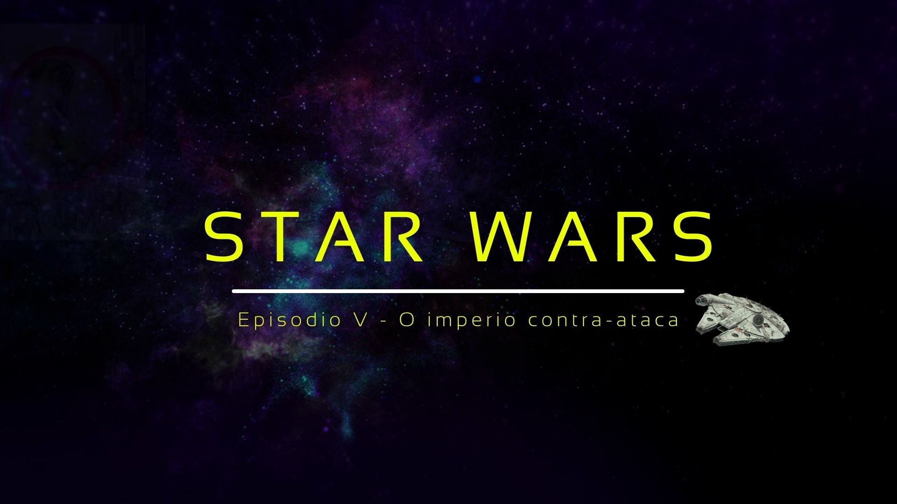
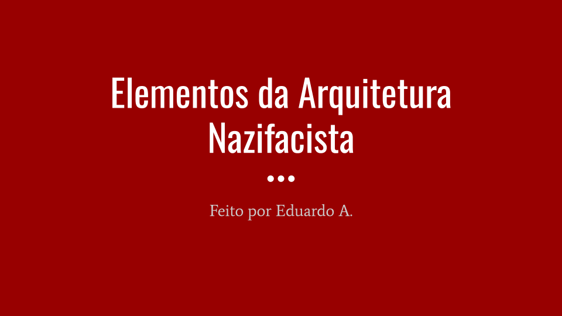
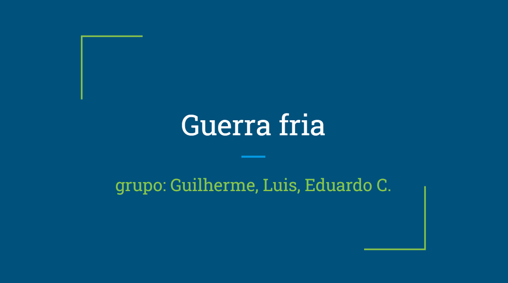
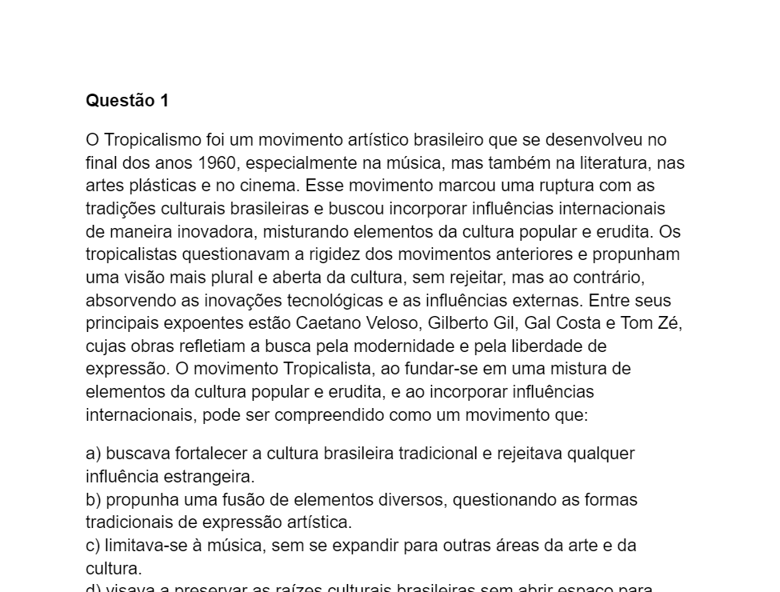

Atividades de Ciências humanas
 Seminario geopolítica
Seminario geopolítica
Realizei uma apresentação sobre os dados de um pais visando comparar a atual conjuntura geopolítica com o histórico pregresso das ordens mundiais.
Habilidades: C6, H39
 Neocolonialismo
Neocolonialismo
Realizei uma apresentação sobre um país que sofreu com o processo de colonização após a 2ª Revolução Industrial e contei sua trajetória por meio de fotos.
Habilidades: C6, H39
 Tecnologias da 2º Revolução
Tecnologias da 2º Revolução
Fiz um documento sobre os desenvolvimentos que ocorreram na França durante a segunda revolução industrial.
Habilidades: C2, H10
 Totalitarismo em Star Wars
Em grupo criei uma apresentação utilizando o canva que mostra os temas do totalitarismo abordados no filme Star Wars.
Habilidades: C2, H10, C6, H39
 Arquitetura no terceiro Reich
Utilizando a ferramenta Google Apresentações criei uma apresentação sobre construções no terceiro Reich e indiquei pontos e elementos da construção que transmitem ideais totalitaristas ou nazifascistas.
Habilidades: C4, H26, H27
Totalitarismo em Star Wars
Em grupo criei uma apresentação utilizando o canva que mostra os temas do totalitarismo abordados no filme Star Wars.
Habilidades: C2, H10, C6, H39
Arquitetura no terceiro Reich
Utilizando a ferramenta Google Apresentações criei uma apresentação sobre construções no terceiro Reich e indiquei pontos e elementos da construção que transmitem ideais totalitaristas ou nazifascistas.
Habilidades: C4, H26, H27
 Guerra fria
"Eu criei uma apresentação sobre a Guerra Fria usando o Google Apresentações. A proposta era explicar o que foi esse período e como ele afetou diferentes países ao redor do mundo e diferentes ambitos da sociedade.Enfrentei dificuldades para escolher o que colocar na apresentação, porque eram muitos acontecimentos importantes, e tive que resumir bastante as informações para que ficassem mais fáceis de entender. A parte que mais gostei foi de pesquisar sobre os mascotes das Olimpíadas, pois foi interessante ver como algo tão simples como um mascote podia representar toda a tensão entre os dois países durante a Guerra Fria."
Habilidades: C6, H39, H40, C5, H28, H30, H32
 Atividade modelo prova - Censura na Ditadura Militar
Utilizando a ferramenta Google Docs criei uma prova sobre a censura, propaganda política e o universo artístico-cultural, durante a fase da Ditadura Militar. Seguindo a proposta da aula utilizei da inteligencia artificial para ajudar a formular as questões e as adaptei para ficarem mais compreensivas. Durante essa etapa enfrentei dificuldades em transformar as questões feitas pelos chatbots em questões que transmitam a complexidade desse tema.
Habilidades: C6, H39, H40, H34, H35